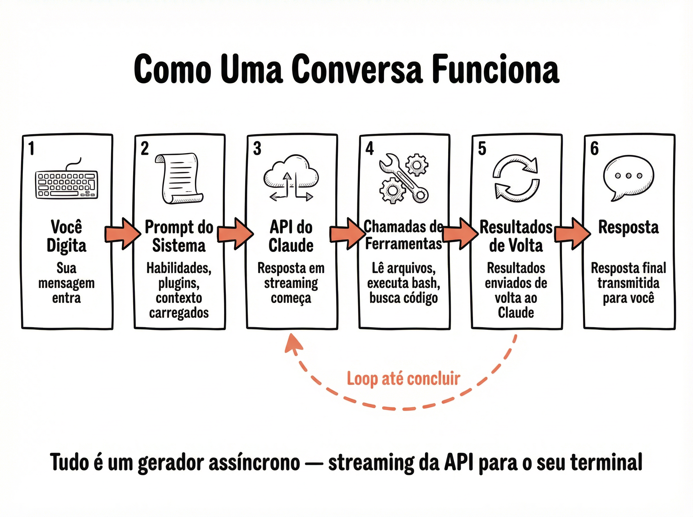
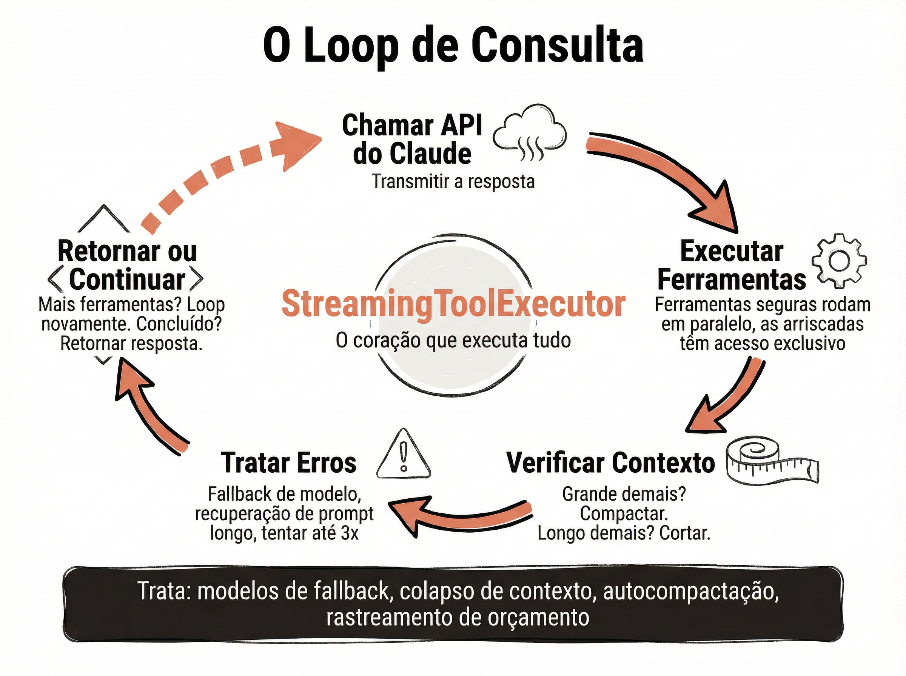

ê°Å¸ââ O Motor de Consulta ê¢â¬â Uma instê¢ncia por conversa
No coraê§ê£o do Claude Code estê¡ o Query Engine ê¢â¬â o Motor de Consulta. Ele gerencia o ciclo de vida completo de cada conversa, desde o momento que vocêª digita atê© a resposta final aparecer no terminal.
Query Engine
Uma instê¢ncia exclusiva por conversa ê¢â¬â isolamento total
Baseado em geradores assêÂncronos (async generators)
Gerencia o estado da conversa: mensagens, contexto, ferramentas ativas
Responsê¡vel por chamar a API do Claude e processar as respostas
Controla o ciclo de vida: inêÂcio, execuê§ê£o, compressê£o, finalizaê§ê£o
ê°Å¸â¡ Por Que Uma Instê¢ncia por Conversa?
Isolamento garante que conversas paralelas nê£o interferem entre si. Cada instê¢ncia mantê©m seu prê³prio estado, histê³rico e contexto ê¢â¬â como processos separados em um sistema operacional.
ê°Å¸â As 6 Etapas ê¢â¬â Do teclado atê© a resposta
Quando vocêª digita algo no Claude Code, sua mensagem passa por exatamente seis etapas antes de virar uma resposta. Este fluxo se repete em loop atê© o Claude decidir que terminou.

Vocêª Digita
Sua mensagem entra no sistema como input do usuê¡rio
Prompt do Sistema
O sistema injeta suas skills, plugins, contexto do projeto e memê³ria
API do Claude
A solicitaê§ê£o ê© transmitida em streaming para os servidores da Anthropic
Chamadas de Ferramentas
Se o Claude precisar ler um arquivo ou executar um comando, ele chama uma ferramenta
Resultados de Volta
Os resultados da ferramenta voltam para o Claude para outra passagem
Resposta
A resposta final ê© transmitida em streaming para o seu terminal
ê°Å¸â¡ O Loop no Coraê§ê£o
As etapas 3 a 5 se repetem em loop. O Claude pode ler um arquivo, depois executar um comando, depois ler outro arquivo, e sê³ entê£o responder. Esse loop ê© o coraê§ê£o do sistema ê¢â¬â ê© o que faz dele um agente, nê£o um chatbot.
ê¢â¢Â¾ê¯Â¸Â O Loop Infinito ê¢â¬â while(true) no coraê§ê£o do sistema
O segredo do Claude Code como agente estê¡ em trêªs palavras: while(true). O loop de consulta roda indefinidamente, permitindo que o Claude execute quantas aê§êµes forem necessê¡rias antes de responder.

O Loop while(true)
O loop roda dentro de um while(true) infinito
Em cada iteraê§ê£o: envia para API ê¢â â recebe resposta ê¢â â verifica se hê¡ tool calls
Se hê¡ tool calls: executa ferramentas ê¢â â injeta resultados ê¢â â volta para a API
Se nê£o hê¡ tool calls: resposta final ê© entregue ao usuê¡rio
O modelo pode fazer dezenas de iteraê§êµes em uma êºnica mensagem
Fazer
- ✓ Confiar no loop ê¢â¬â o Claude sabe quando parar
- ✓ Dar instruê§êµes claras para que o loop seja eficiente
-
✓
Usar
/compactse o loop ficar muito longo
Evitar
- ✗ Interromper prematuramente com Ctrl+C (a menos que necessê¡rio)
- ✗ Dar instruê§êµes vagas que causam loops desnecessê¡rios
- ✗ Ignorar quando o contexto estê¡ ficando grande
ê°Å¸ÅÅ Streaming Tool Executor ê¢â¬â Paralelismo e acesso exclusivo
No centro do loop estê¡ o Streaming Tool Executor ê¢â¬â o componente que decide como executar as ferramentas. Ele ê© inteligente o suficiente para rodar ferramentas seguras em paralelo e dar acesso exclusivo a ferramentas arriscadas.
Dois Modos de Execuê§ê£o
Paralelo (concurrency-safe): Ferramentas read-only como Read, Glob, Grep rodam simultaneamente. Ler 5 arquivos ao mesmo tempo ê© seguro e rê¡pido.
Exclusivo (nê£o concurrency-safe): Ferramentas que modificam estado como Edit, Write, Bash rodam uma de cada vez. Editar dois arquivos em paralelo poderia causar conflitos.
O mê©todo isConcurrencySafe() de cada ferramenta define o comportamento
Ferramentas isReadOnly() sê£o aprovadas automaticamente sem pedir permissê£o
ê°Å¸âÅ Impacto na Performance
Leitura paralela de arquivos pode ser 5-10x mais rê¡pida que sequencial
O cache de prompt ê© compartilhado entre execuê§êµes paralelas
Ferramentas seguras para concorrêªncia nê£o precisam de aprovaê§ê£o do usuê¡rio
O executor gerencia filas e prioridades automaticamente
ê°Å¸â⬠Fallback de Modelo ê¢â¬â Troca automê¡tica sem vocêª perceber
O que acontece quando o modelo principal falha? O Claude Code tem um sistema de fallback que troca automaticamente para um modelo alternativo ê¢â¬â e vocêª nem percebe.
Resiliêªncia Transparente
Se a chamada de API para o modelo principal falhar, o sistema tenta um modelo de fallback
A troca ê© completamente transparente ê¢â¬â o usuê¡rio nê£o vêª erro
O contexto da conversa ê© preservado durante a troca
Feature flags controlam quais modelos estê£o disponêÂveis como fallback
O cê³digo menciona modelos como "capybara", "capybara-fast" e "capybara-fast[1m]"
ê¢Å¡Â ê¯Â¸Â O Modelo Capybara
O vazamento revelou referêªncias ao codinome "Capybara" ê¢â¬â possivelmente a prê³xima geraê§ê£o de modelos Claude (Claude 5?). Trêªs variantes foram encontradas: capybara (padrê£o), capybara-fast (rê¡pido) e capybara-fast[1m] (janela de 1M tokens). A Anthropic nê£o confirmou.
ê°Å¸â¡ Geradores AssêÂncronos ê¢â¬â Streaming palavra por palavra
Tudo no Claude Code ê© construêÂdo com async generators (geradores assêÂncronos). Isso significa que as respostas nê£o chegam de uma vez ê¢â¬â elas fluem em tempo real, ferramenta por ferramenta, palavra por palavra.
Fluxo ContêÂnuo, Nê£o Batch
Respostas sê£o transmitidas em tempo real via streaming
Cada token (pedaê§o de texto) ê© renderizado no terminal imediatamente
Resultados de ferramentas aparecem conforme sê£o concluêÂdos
Nê£o existe "esperar tudo terminar" ê¢â¬â ê© um fluxo contêÂnuo
A experiêªncia ê© como assistir o Claude "pensar em tempo real"
ê°Å¸â¡ Na Prê¡tica
O streaming ê© o que torna o Claude Code responsivo mesmo em tarefas longas. Vocêª vêª progresso imediato ê¢â¬â texto aparecendo, ferramentas sendo executadas, resultados surgindo. êâ° fundamentalmente diferente de fazer uma requisiê§ê£o e esperar a resposta completa.
ê°Å¸âÅ Async Generators em TypeScript
async function* produz valores sob demanda
yield emite cada token/resultado conforme fica disponêÂvel
for await...of consome o stream no lado do cliente
O padrê£o ê© usado em todo o sistema: API, ferramentas, agentes, ponte
ê°Å¸ââ¹ Resumo do Mê³dulo
Prê³ximo Mê³dulo:
1.4 - ê°Å¸Â§Â° A Caixa de Ferramentas: 40+ Ferramentas